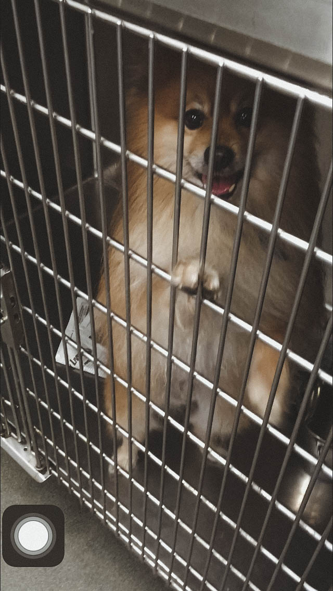
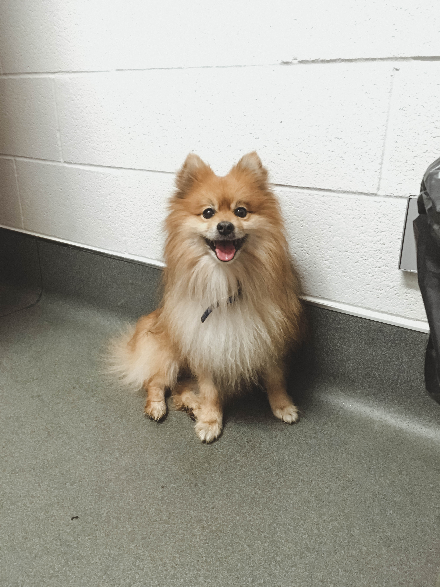
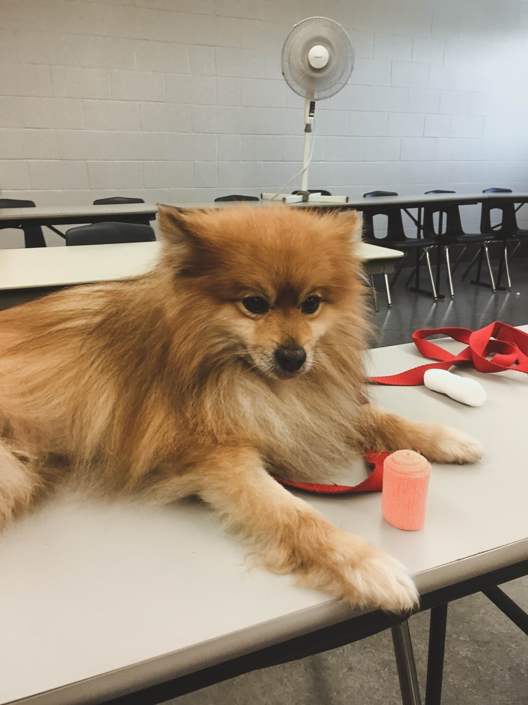
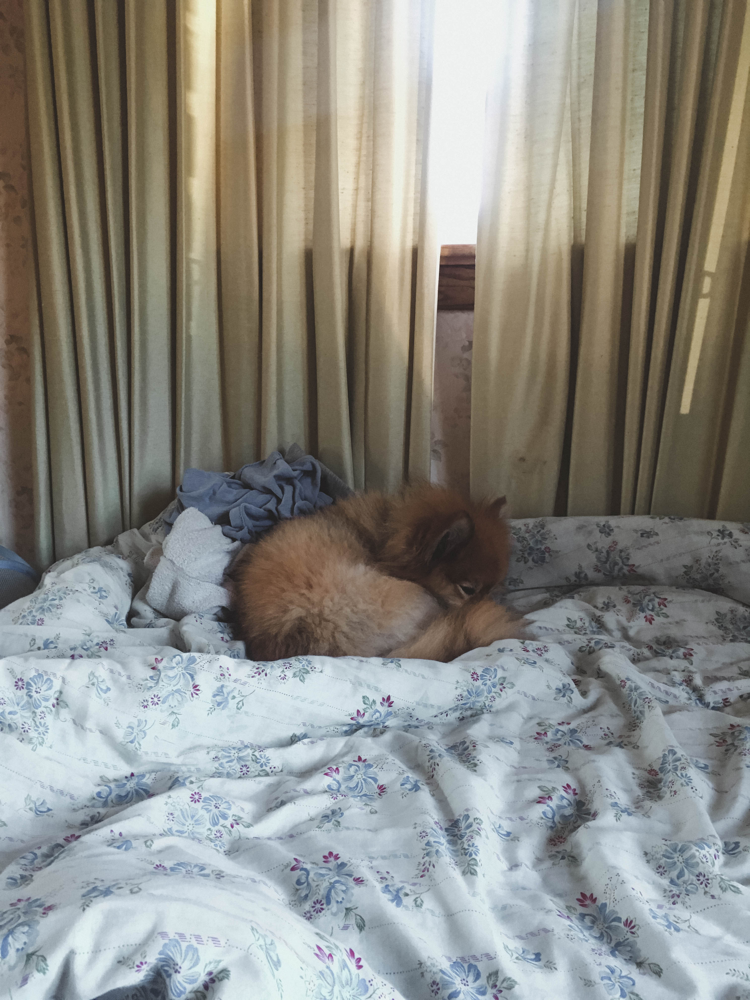
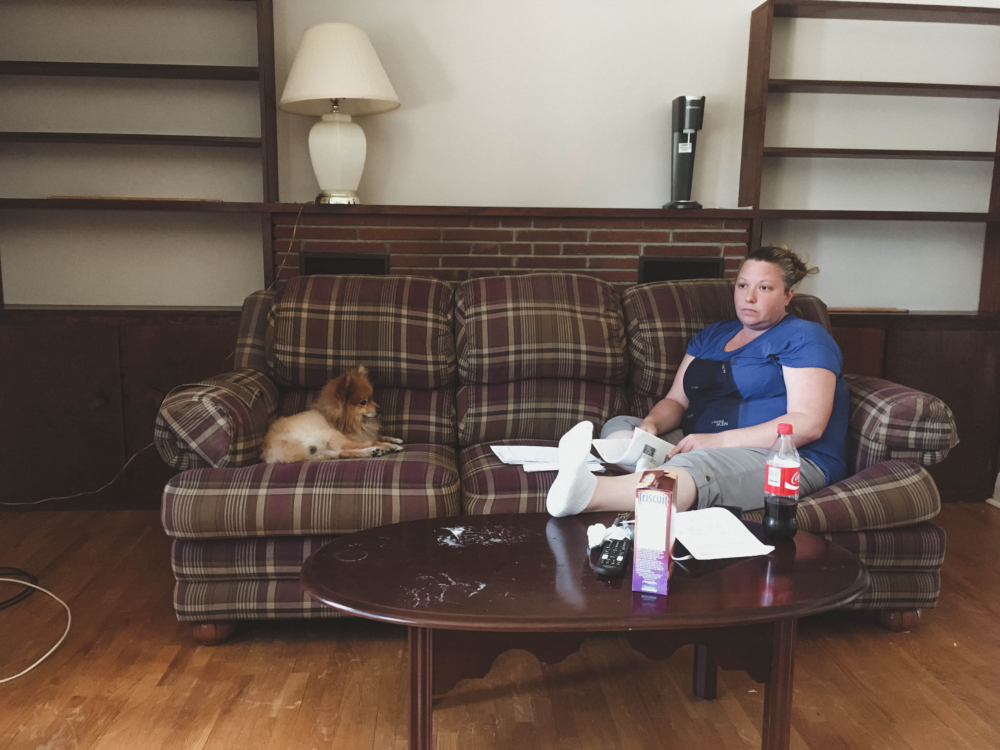
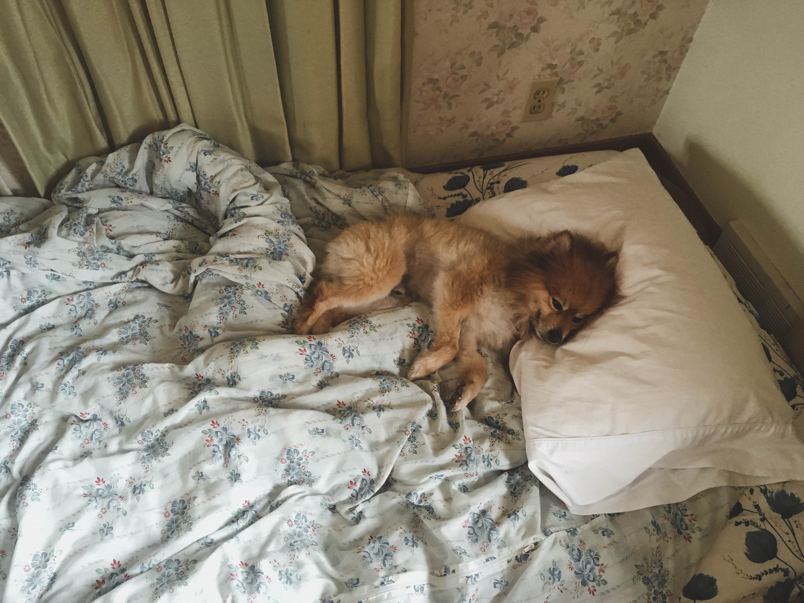

Skip's Story
The summer of 2016 changed my life. I was 24 years old and starting my second year of Vet Tech college at Ridgetown. 3 of my friends and I had found a house to live in that sat directly across the street from Ridgetown campus and we knew that it was going to be a good year.
The first week of school always comprised of kennel duty. In tech school, we were lucky enough to have a colony of dogs and cats to work with for the semester. They were given to Ridgetown from local shelters and us students would practice technical services on them (blood collection, IV catheter placement, etc.) and perform surgeries on them (spays, neuters, dentals). At the end of the summer, they would be be available for adoption to the students and the public. Skip was one of the dogs in our colony that summer.
To be honest, I didn’t give Skip a second glance when I first went to see our colony. I knew that he was named Skip by one of our instructor’s because he always had a skip to his step, but to me, he was just another Pomeranian with long hair and an annoying bark. He was also extremely terrified of his surroundings and come time for his walks, it took me forever to get him out of his kennel so I didn’t pay much attention to him.
The continued on for a month or so. Vet Tech school is extremely fast paced and by the second week of school, we were already practicing blood collection from dogs and cats, bandaging, etc., and whenever we needed to practice on an animal, I would see my classmates pick Skip. For a Pomeranian, I was surprised that he was so cooperative. He would sit there and let anyone take his blood with no complaint, or he would stare doe-eyed as my classmates tried to pill him. Still, he was just another colony dog to me.
The turning point came around May of 2016. I was chatting with my roommate Andrea one night about the colony dogs after her kennel duty rotation, and she brought up Skip. “I had the most amazing walk with Skip today,” she had said. “We were in the back field when the sun began to rise, and he just sat down on the grass watching the sun come up. The wind swept through his beautiful hair and he just looked so content being outside of his kennel.” I laughed at the time, calling her unnecessarily poetic, but she said that Skip had won a place in her heart despite being a Pomeranian. He stuck out to me after that.
Dan had also decided to visit me that coming weekend after our discussion of Skip. He had told me that he was thinking of adopting a dog, but didn’t know how to take that leap. I had mentioned that Ridgetown’s colony dogs were adoptable at the end of the summer, so I offered to show him some of the dogs that weekend to see if anyone peaked his interest. At the time, he was more interested in a Shiba Inu that we had. I took him to campus one day and brought the Shiba Inu outside to meet him, but she wasn’t very fond of men and there was no connection there. I then offered to bring Skip outside to meet him since he had a similar look to a Shiba Inu. We took a walk together and when it was time for Skip to go back to his kennel, he kept looking back at Dan as if he didn’t want to leave. I think at that moment, he sparked Dan’s interest.
As the weeks went on, Dan contemplated on whether or not he wanted to go through with Skip’s adoption. To help him with his choice, I decided to get to know Skip more to see if he would be a good fit. I tried to spend more time with him between classes but with the limited amount of time I had, It was hard to get him to open up to me. Even though Skip had been at the colony for more than a month at this point, he was still weary of his surroundings and even more so of people. I found out that I always had to wait for him to approach me in order for him to feel comfortable. I learned that he was deathly afraid of stairs and didn’t know how to go up or down. I realized that his teeth were horribly rotten and he could barely chew kibble because his whole mouth was most likely in pain.
As more time passed, Between class sessions turned into visits before school, after school, and in the evening before I went back home. Even though I was spending time with him, I could see that after every visit, his trust in me would disappear and it was as if we were at square one. Though I sensed his apprehension, I wanted to show him that I wanted to be his friend, all the while reminding myself that Dan may not even want to adopt him and to keep my distance to avoid disappointment.
By June, I had gotten to know Skip pretty well. We would go on walks every day and I would teach him basic manners such as sit, stay, and leash walking. My classmates always commented on how I should apply for his adoption since I was spending my free time with him. Anytime we were in class and needed an animal model, they would choose Skip and joke that they took “my baby”. I knew that a decision had to be made at this point because I was getting attached to him. By the time the adoption applications opened, Dan had told me to put in an application for him. And then came the hard part.
Adoption applications can be very competitive. Our student body composed of about 50 people (seniors and juniors combined) with only 10 dogs and 10 cats. If more than one application is made for an animal, our adoption coordinator would choose the best home for that animal. I knew that Skip was a popular choice among my classmates, so I knew I couldn’t get my hopes up. Instead, I chose to spend even more time with him. Every waking moment I had, I would go see him, spend time with him, and monitor his health records. I applied to take him home on the weekend to spend some time with him, and to my delight, it was approved!
The first weekend he came home with me, we stayed in Ridgetown in the house that I shared with my roommates. Since Skip would be my first dog, my roommates helped me with setting boundaries for him, and they taught me how to train him with manners. Dan had also come to visit that weekend, and we together, we learned how to be parents to Skip. He was nervous in his new surrounding, but since he was naturally well mannered, he won our hearts. It seemed as if he had never slept on a bed before, before as soon as he crawled into my bed, he fell right asleep and looked absolutely at ease. From that point on, I saw him as a part of our little family.
It’s amazing to see how much a dog can transform in their given environment. That weekend, though timid, he was a curious George. He wanted to be by my side for everything and would always peek into my roommate’s rooms to see what they were up to. When it was time for him to go back to the colony, he went without complaint but the next time I went to visit him, I could tell that his trust in me had faltered. When he looked at me from his kennel, he wasn’t same Skip I had known 24 hours prior.
Fast forward another week or so. Then came the day the adoptions were announced. I was anxious and nervous beyond belief. When I got the email that Skip was going home with me, I felt relief rush through me like a wave. I quickly ran to Skip, told him that he was going to be a part of my life forever, and ran to our adoption coordinator to give her a big hug. She had said that she saw how much time I spent with him and the decision was a no brainer; she knew that he would be in good hands with me.
As I finish typing this, I realize that it has been almost 4 years since he’s entered my life. What was once the shy, timid, and fearful dog that I knew at Ridgetown grew into a loving and sweet companion. I am so proud of how he opened up his little heart to an entirely new world; seemingly forgiving and forgetting his past experiences. Though I don’t know his background exactly, I can only assume that his need to stay by my side at all times is built off of abandonment in a life before he met us. As I tell him every day, I will never let him go through that ever again. He is safe with us forever more.
A part of me has always been disappointed in myself that I didn’t get into vet school after undergrad. I’ve always told myself that there was a reason for it, and I’d like to think that Skip is the reason. Had I gone to vet school, I would have never met Skip and so with that, I will conclude that I would not have had it any other way.





